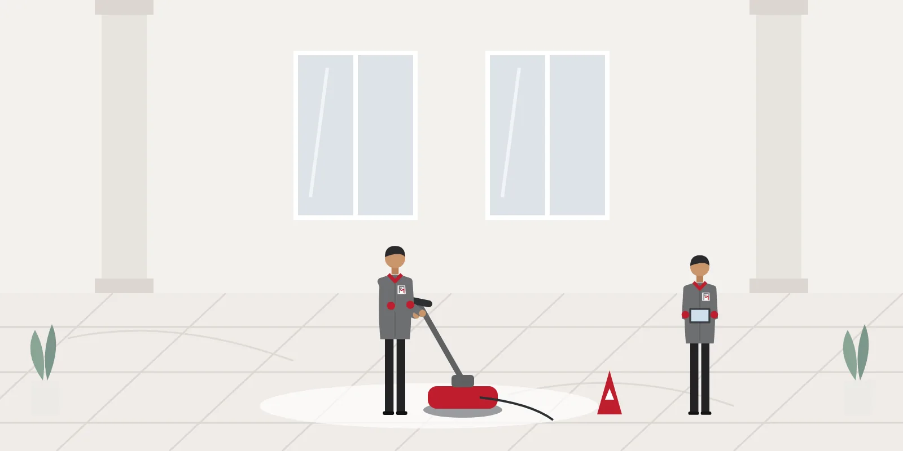

الخدمات المتخصصة
جلي وتلميع وترميم الرخام في الدوحة وجميع أنحاء قطر

الأرضيات الرخامية جزء من كثير من المباني في قطر، من ردهات الفنادق واستقبالات المكاتب إلى الفلل والمساجد. ومع الوقت تجعل حركة الأقدام والرمل ومواد التنظيف غير المناسبة الرخام باهتًا ومخدوشًا ومبقّعًا. تقدم JAFM قطر خدمات جلي وتلميع وترميم الرخام في الدوحة وجميع أنحاء قطر. نعمل في مجال إدارة المرافق منذ عام 1977، ونحمل شهادات ISO 9001 وISO 14001 وISO 45001 الصادرة عن TNV.
لماذا يفقد الرخام لمعانه في قطر
الرمل هو العدو الأول للأرضيات الرخامية؛ فالحبيبات الناعمة التي تدخل مع الأحذية تعمل مثل ورق الصنفرة وتُذهب السطح اللامع، خاصةً عند المداخل والمصاعد والممرات. كما تؤثر المنظفات الحمضية والعصائر والقهوة المسكوبة وكثير من المنظفات العامة في الحجر وتترك بقعًا باهتة. وقد تترك المياه حلقات واصفرارًا، وقد تتسبب العربات والأثاث الثقيل في كسر الحواف.
ومعظم الرخام الباهت لا يحتاج إلى استبدال؛ فالمعالجة الصحيحة تعيد اللمعان عادةً بجزء بسيط من تكلفة الحجر الجديد.
ما المعالجة التي تحتاجها أرضيتك؟
نفحص الأرضية أولًا ونوصي بأخف معالجة تحقق النتيجة:
- التنظيف والتلميع الآلي للأرضيات الباهتة غير المخدوشة
- التلميع أو الكريستلة لإعادة اللمعان للأرضيات المستهلكة المستوية
- الصقل لإزالة الخدوش الخفيفة وآثار الأحماض والمياه
- الجلي بالألماس لإزالة الخدوش العميقة وتسوية البلاط غير المستوي، يليه الصقل والتلميع
- العزل لحماية الحجر من البقع بعد التلميع
ونعالج أيضًا الجرانيت والتيرازو والأحجار الطبيعية الأخرى على الأرضيات والجدران والدرج والأسطح.
ما الذي يشمله تلميع الرخام
- فحص الحجر، وتجربة مساحة صغيرة عند الحاجة
- نقل الأثاث الخفيف وحماية الجدران والوزرات والأسطح المجاورة
- تنظيف عميق لإزالة الأوساخ والشمع القديم
- الجلي والصقل والتلميع حتى الدرجة المتفق عليها
- معالجة البقع حسب ما يسمح به الحجر
- عزل الحجر
- التنظيف بعد العمل وجولة نهائية معك
- نصائح حول منتجات التنظيف اليومية التي تحافظ على اللمعان
خطوات العمل
- اطلب عرض سعر. أخبرنا بالمساحة ونوع الحجر والمشكلة.
- زيارة موقع مجانية. نفحص الحجر والضرر، ونجرّب مساحة صغيرة عند الحاجة.
- عرض سعر مكتوب. يوضح العرض المعالجة والمساحة والمدة المتوقعة للعمل.
- الاتفاق على الموعد. يمكن تنفيذ العمل على أجزاء، ليلًا أو في عطلة نهاية الأسبوع، لتبقى الردهات والمكاتب مفتوحة.
- الترميم. تُجلى الأرضية وتُصقل وتُلمّع وتُعزل كما هو متفق عليه.
- التسليم. نتفقد الأرضية معك ونترك لك تعليمات عناية بسيطة.
كم مرة يجب تلميع الرخام؟
تبطئ الدواسات الجيدة عند المداخل والمسح اليومي للغبار تآكل الأرضية كثيرًا، لأنها تمنع وصول الرمل إليها.
ما الذي يؤثر في السعر
- 1المساحة الإجمالية بالمتر المربع
- 2نوع الحجر وحالته
- 3المعالجة المطلوبة: التلميع أقل تكلفة من الجلي
- 4نقل الأثاث وقيود ساعات العمل
- 5الدرج والحواف والإطارات، لأنها تستغرق وقتًا أطول من الأرضيات المفتوحة
نقدم زيارة موقع مجانية وعرض سعر مكتوبًا، لتعرف التكلفة قبل بدء أي عمل.
المناطق التي نخدمها: جميع أنحاء قطر
نرمّم الرخام في أي مكان في قطر، ومنها الخليج الغربي والسد والدفنة ومشيرب والوعب ولوسيل واللؤلؤة والوكرة والخور. وإذا كان مبناك في منطقة أخرى، فنحن نخدمها أيضًا.
الأسئلة الشائعة
هل يمكن إصلاح الرخام المخدوش؟
في معظم الحالات نعم. تُزال الخدوش الخفيفة بالصقل والتلميع، أما الخدوش العميقة فتحتاج إلى الجلي بالألماس أولًا.
كم يستغرق تلميع الرخام؟
يعتمد ذلك على المساحة وحالتها. قد تستغرق أرضية فيلا من يوم إلى ثلاثة أيام، أما الردهة الكبيرة فتُنجز عادةً على أجزاء خلال عدة ليالٍ.
هل يمكن استخدام الأرضية مباشرة بعد التلميع؟
نعم عادةً، بعد أن تجف. وبعد العزل ننصح بإبعاد المياه والسوائل عن الأرضية في اليوم الأول.
ما الذي نستخدمه لتنظيف الرخام يوميًا؟
منظف متعادل الحموضة مخصص للحجر. وتجنّب الخل والليمون والكلور ومنظفات الحمامات العامة لأنها تؤثر في الرخام.
هل تلمّعون الجرانيت والتيرازو أيضًا؟
نعم. نعالج الرخام والجرانيت والتيرازو والأحجار الطبيعية الأخرى.
احجز تلميع الرخام
املأ نموذج طلب عرض السعر على jafmqatar.com لحجز زيارة موقع مجانية والحصول على عرض سعر مكتوب. ويمكنك أيضًا الاتصال بنا على +974 4444 1416، أو زيارة مكتبنا في المكتب 504B، الطابق الخامس، مركز البستان، السد، الدوحة.